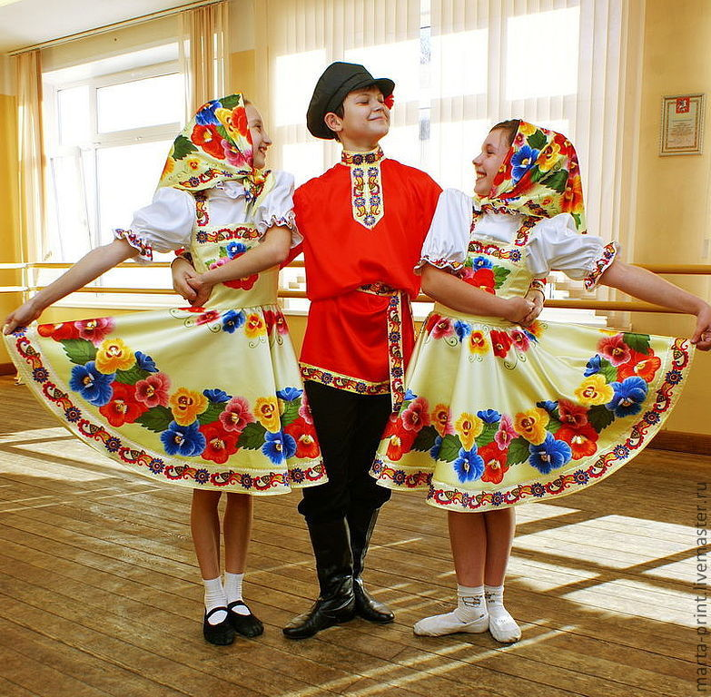
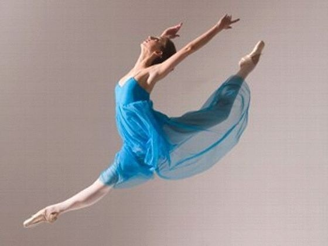
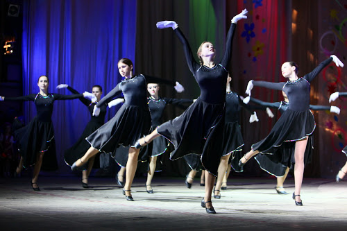
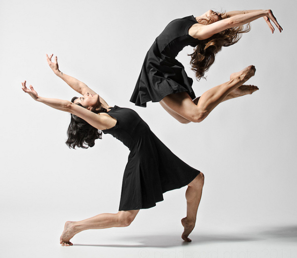
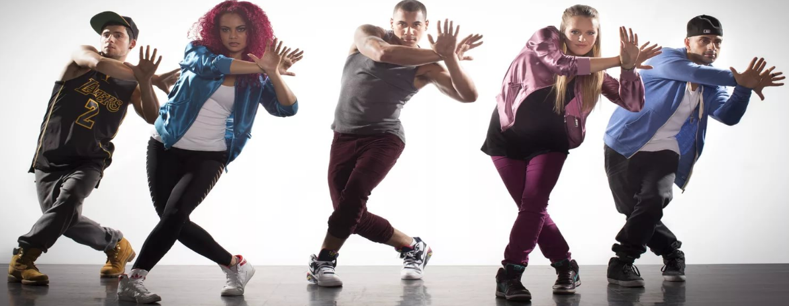

Направления

Народные танцы
Танец, который исполняется в своей естественной среде и имеет определённые традиционные для данной местности движения, ритмы, костюмы и тому подобное.

Бальные танцы

Естрадные танцы
Вид сценического танца, небольшая танцевальная сценка (танцевальная миниатюра), чаще развлекательного характера.

Современные танцы
